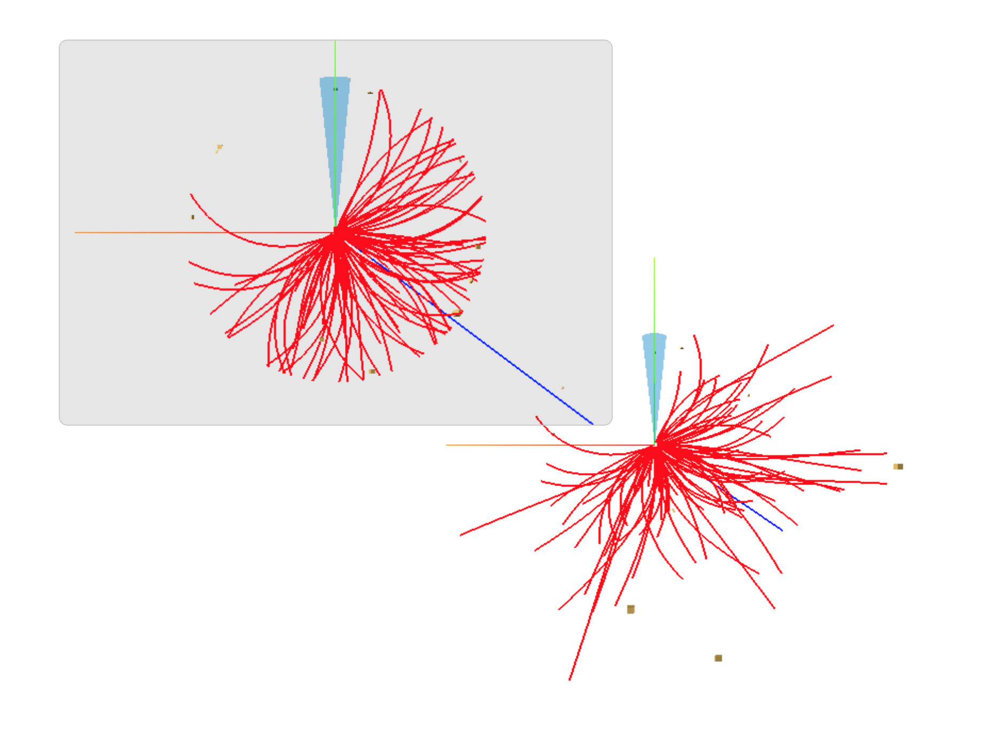

Report of contributions done during Google Summer of Code 2019
Links
- Github repository for the project: https://github.com/HSF/phoenix
- My contributions to the project: https://github.com/HSF/phoenix/commits?author=emiliocortina
- Deployed application: https://hepsoftwarefoundation.org/phoenix/
Initial project
Here are some screenshots of the project before Google Summer of Code started:
The application was able to load geometries from OBJ files, event data specified in JSON format and build programatically some geometries

Contributions done
During Google Summer of Code I made several contributions to the project, the most important ones will be summarized here:
Angular port
The initial project was a web application consisting of different HTML documents (one for every section) and a single JavaScript file with the whole functionality in it.
For this reason, the first thing we decided to do was to 'rebuild' the application on a modern front-end framework (in this case Angular) so we could implement a modular architecture (as represented below).
Finally we deployed the application online to have a website where it could be accessed (https://hepsoftwarefoundation.org/phoenix/) and added test coverage to the project.
More sections
Once the Angular port was done, it was very easy to create new sections that displayed different data. The first additional section we created was a 'Playground' in which users could have a blank scene and load different data and geometries.
After the Playground section, we also added a Playground VR section that followed the same principles as the first one but also offering virtual reality capabilities on devices supporting WebVR.
Event data format
We finished the specification of the format used to represent the event data, and adapted the application to support it. The format is written in JSON and is able to represent multiple events, each containing different collections of physics objects.
More information about this format is available in the project documentation at: https://github.com/HSF/phoenix/blob/master/src/assets/docs/users.md
Import and export options
After finishing documenting the event data format we implemented the loader for the files written in that format. We also added loading options for external OBJ and GLTF files.
Finally, an option to save and load the configuration of the scene was implemented.
More controls
More options for manipulating objects were added to the controls menu. These include changing color of collections and geometries and object cuts.
Object cuts let users filter individual objects based on some of their parameters.
Options bar
As the application got more complex, we eventually needed an alternative to the controls menu for the new options we wanted to implement. So an options bar with the following buttons was added (from left to right):
- 1-4: Preset views, allow to change the camera to fixed locations.
- 5: Overlay view, presents an additional display with an alternate ortographic camera.
- 6: Object selection, enabling it will show a panel where information about the objects the users click on will be displayed.
- 7: Collection information, displays a panel to show information about all the objects in a collection.
- 8: Import and export options, showed above.
TODO
- Improve test coverage.
- Add support for more compound objects.
- Add support for more physics objects.